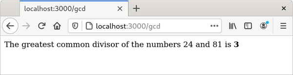
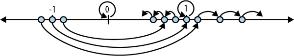
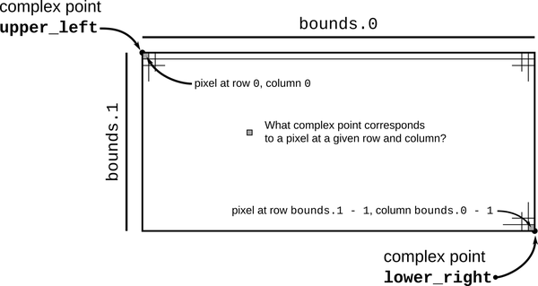
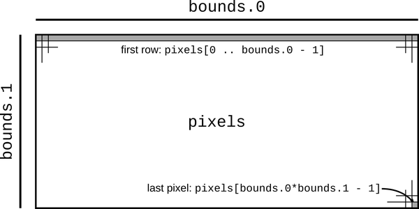

Chapter 2. A Tour of Rust
Rust presents the authors of a book like this one with a challenge: what gives the language its character is not some specific, amazing feature that we can show off on the first page, but rather, the way all its parts are designed to work together smoothly in service of the goals we laid out in the last chapter: safe, performant systems programming. Each part of the language is best justified in the context of all the rest.
So rather than tackle one language feature at a time, we’ve prepared a tour of a few small but complete programs, each of which introduces some more features of the language, in context:
-
As a warm-up, we have a program that does a simple calculation on its command-line arguments, with unit tests. This shows Rust’s core types and basic syntax.
-
Next, we build a web server. We’ll use a third-party library to handle the details of HTTP and introduce string handling, closures, and error handling.
-
Our last program plots a beautiful fractal, distributing the computation across multiple threads for speed. This includes an example of a generic function, illustrates how to handle something like a buffer of pixels, and shows off Rust’s support for concurrency.
Rust’s promise to prevent undefined behavior with minimal impact on performance influences the design of every part of the system, from the standard data structures like vectors and strings to the way Rust programs use third-party libraries. The details of how this is managed are covered throughout the book. But for now, we want to show you that Rust is a capable and pleasant language to use.
First, of course, you need to install Rust on your computer.
rustup and Cargo
The best way to install Rust is to use rustup. Go to https://rustup.rs and follow the instructions there.
You can, alternatively, go to the Rust website to get pre-built packages for Linux, macOS, and Windows. Rust is also included in some operating system distributions. We prefer rustup because it’s a tool for managing Rust installations, like RVM for Ruby or NVM for Node. For example, when a new version of Rust is released, you’ll be able to upgrade with zero clicks by typing rustup update.
In any case, once you’ve completed the installation, you should have a few new commands available at your command line:
$cargo--versioncargo 1.95.0 (f2d3ce0bd 2026-03-21)$rustc--versionrustc 1.95.0 (59807616e 2026-04-14)$rustdoc--versionrustdoc 1.95.0 (59807616e 2026-04-14)
Here, the $ is the command prompt; on Windows, this would be PS C:\> or something similar. In this transcript we run the three commands we installed, asking each to report which version it is. Taking each command in turn:
-
cargois Rust’s compilation manager, package manager, and general-purpose tool. You can use Cargo to start a new project, build and run your program, and manage any external libraries your code depends on. -
rustcis the Rust compiler. Usually we let Cargo invoke the compiler for us, but sometimes it’s useful to run it directly. -
rustdocis the Rust documentation tool. If you write documentation in comments of the appropriate form in your program’s source code,rustdoccan build nicely formatted HTML from them. Likerustc, we usually let Cargo runrustdocfor us.
As a convenience, Cargo can create a new Rust package for us, with some standard metadata arranged appropriately:
$cargonewhelloCreating binary (application) `hello` package
This command creates a new package directory named hello, ready to build a command-line executable.
Looking inside the package’s top-level directory:
$cdhello$ls-latotal 24drwxrwxr-x. 4 jimb jimb 4096 Sep 22 21:09 .drwx------. 62 jimb jimb 4096 Sep 22 21:09 ..drwxrwxr-x. 6 jimb jimb 4096 Sep 22 21:09 .git-rw-rw-r--. 1 jimb jimb 7 Sep 22 21:09 .gitignore-rw-rw-r--. 1 jimb jimb 88 Sep 22 21:09 Cargo.tomldrwxrwxr-x. 2 jimb jimb 4096 Sep 22 21:09 src
We can see that Cargo has created a file Cargo.toml to hold metadata for the package. At the moment this file doesn’t contain much:
[package]name="hello"version="0.1.0"edition="2024"[dependencies]
If our program ever acquires dependencies on other libraries, we can record them in this file, and Cargo will take care of downloading, building, and updating those libraries for us. We’ll cover the Cargo.toml file in detail in Chapter 8.
Cargo has set up our package for use with the git version control system, creating a .git metadata subdirectory and a .gitignore file. You can tell Cargo to skip this step by passing --vcs none to cargo new on the command line.
The src subdirectory contains the actual Rust code:
$cdsrc$ls-ltotal 4-rw-rw-r--. 1 jimb jimb 45 Sep 22 21:09 main.rs
It seems that Cargo has begun writing the program on our behalf. The main.rs file contains the text:
fnmain(){println!("Hello, world!");}
In Rust, you don’t even need to write your own “Hello, World!” program. And this is the extent of the boilerplate for a new Rust program: two files, totaling nine lines.
We can invoke the cargo run command from any directory in the package to build and run our program:
$cargorunCompiling hello v0.1.0 (/home/jimb/rust/hello)Finished `dev` profile [unoptimized + debuginfo] target(s) in 0.28sRunning `/home/jimb/rust/hello/target/debug/hello`Hello, world!
Here, Cargo has invoked the Rust compiler, rustc, and then run the executable it produced. Cargo places the executable in the target subdirectory at the top of the package:
$ls-l../target/debugtotal 580drwxrwxr-x. 2 jimb jimb 4096 Sep 22 21:37 builddrwxrwxr-x. 2 jimb jimb 4096 Sep 22 21:37 depsdrwxrwxr-x. 2 jimb jimb 4096 Sep 22 21:37 examples-rwxrwxr-x. 1 jimb jimb 576632 Sep 22 21:37 hello-rw-rw-r--. 1 jimb jimb 198 Sep 22 21:37 hello.ddrwxrwxr-x. 2 jimb jimb 68 Sep 22 21:37 incremental$../target/debug/helloHello, world!
When we’re through, Cargo can clean up the generated files for us:
$cargocleanRemoved 21 files, 8.4MiB total$../target/debug/hellobash: ../target/debug/hello: No such file or directory
Rust Functions
Rust’s syntax is deliberately unoriginal. If you are familiar with C, C++, Java, or JavaScript, you can probably find your way through the general structure of a Rust program. Here is a function that computes the greatest common divisor of two integers, using Euclid’s algorithm. You can add this code to the end of src/main.rs:
fngcd(mutn:u64,mutm:u64)->u64{whilem!=0{ifm<n{lett=m;m=n;n=t;}m=m%n;}n}
The fn keyword (pronounced “fun”) introduces a function. Here, we’re defining a function named gcd, which takes two parameters n and m, each of which is of type u64, an unsigned 64-bit integer. The -> token precedes the return type: our function returns a u64 value. Four-space indentation is standard Rust style.
Rust’s machine integer type names reflect their size and signedness: i32 is a signed 32-bit integer; u8 is an unsigned 8-bit integer (used for “byte” values), and so on. The isize and usize types hold pointer-sized signed and unsigned integers, 32 bits long on 32-bit platforms, and 64 bits long on 64-bit platforms. Rust also has two floating-point types, f32 and f64, which are the IEEE single- and double-precision floating-point types, like float and double in C and C++.
By default, once a variable is initialized, its value can’t be changed, but placing the mut keyword (pronounced “mute,” short for mutable) before the parameters n and m allows our function body to assign to them. In practice, most variables don’t get reassigned; the mut keyword on those that do can be a helpful hint when reading code.
The heart of our function is a while loop containing an if statement and an assignment. Unlike C and C++, Rust does not require parentheses around the conditional expressions, but it does require curly braces around the statements they control.
A let statement declares a local variable, like t in our function. We don’t need to write out t’s type, as long as Rust can infer it from how the variable is used. In our function, the only type that works for t is u64, matching m and n. Rust only infers types within function bodies: you must write out the types of function parameters and return values, as we did before. If we wanted to spell out t’s type, we could write:
lett:u64=m;
Rust has a return statement, but the gcd function doesn’t need one. If a function body ends with an expression that is not followed by a semicolon, that’s the function’s return value. In fact, any block surrounded by curly braces can function as an expression. For example, this is an expression that prints a message and then yields x.cos() as its value:
{println!("evaluating cos x");x.cos()}
It’s typical in Rust to use this form to establish the function’s value when control “falls off the end” of the function, and use return statements only for explicit early returns from the midst of a function.
Writing and Running Unit Tests
Rust has simple support for testing built into the language. To test our gcd function, we can add this code at the end of src/main.rs:
#[test]fntest_gcd(){assert_eq!(gcd(14,15),1);assert_eq!(gcd(2*3*54321,5*7*54321),54321);assert_eq!(gcd(0,0),0);}
Here we define a function named test_gcd, which calls gcd and checks that it returns correct values. The #[test] atop the definition marks test_gcd as a test function, to be skipped in normal compilations, but included and called automatically if we run our program with the cargo test command. We can have test functions scattered throughout our source tree, placed next to the code they exercise, and cargo test will automatically gather them up and run them all.
The #[test] marker is an example of an attribute. Attributes are an open-ended system for marking functions and other declarations with extra information, like attributes in C++ and C#, or annotations in Java. They’re used to control compiler warnings and code style checks, include code conditionally (like #ifdef in C and C++), tell Rust how to interact with code written in other languages, and so on. We’ll see more examples of attributes as we go.
The body of our test consists of several calls to the assert_eq! macro, testing the results of a few gcd test cases. The ! character marks these as a macro calls, not function calls. During compilation, macro calls are “expanded” to Rust code. Our first use of assert_eq! expands to a bit of code that checks whether gcd(14, 15) is equal to 1. If not, it prints a helpful error message including the two values and the source location of the failing check. Then it terminates the program, or in this case, the test. This kind of abrupt termination is called a panic.
There’s also an assert!(condition); macro that checks a boolean condition. Like the assert macro in C and C++, Rust’s assert! and assert_eq! macros are commonly used to check invariants in regular code, not only in tests. Unlike C and C++, in which assertions can be skipped, Rust always checks assertions regardless of how the program was compiled. There are also debug_assert! and debug_assert_eq! macros, whose assertions are skipped when the program is compiled for speed.
With our gcd and test_gcd definitions added to the hello package we created at the beginning of the chapter, and our current directory somewhere within the package’s subtree, we can run the tests as follows:
$cargotestCompiling hello v0.1.0 (/home/jimb/rust/hello)Finished `test` profile [unoptimized + debuginfo] target(s) in 0.35sRunning unittests src/main.rs (.../hello/target/debug/deps/hello-2375...)running 1 testtest test_gcd ... oktest result: ok. 1 passed; 0 failed; 0 ignored; 0 measured; 0 filtered out;finished in 0.00s
Handling Command-Line Arguments
In order for our program to take a series of numbers as command-line arguments and print their greatest common divisor, we can replace the main function in src/main.rs with the following:
usestd::str::FromStr;usestd::env;fnmain(){letmutnumbers=Vec::new();forarginenv::args().skip(1){numbers.push(u64::from_str(&arg).expect("error parsing argument"));}ifnumbers.len()==0{eprintln!("Usage: gcd NUMBER ...");std::process::exit(1);}letmutd=numbers[0];formin&numbers[1..]{d=gcd(d,*m);}println!("The greatest common divisor of {numbers:?} is {d}");}
This is a large block of code, so let’s take it piece by piece:
usestd::str::FromStr;usestd::env;
The first use declaration brings the standard library trait FromStr into scope. A trait is a collection of function signatures that types can implement, like an interface in Java or C#. Any type that implements the FromStr trait has a from_str method that tries to parse a value of that type from a string. The u64 type implements FromStr, and we’ll call u64::from_str to parse our command-line arguments. Although we never use the name FromStr elsewhere in the program, a trait must be in scope in order to use its methods. We’ll cover traits in detail in Chapter 11.
The second use declaration brings in the std::env module, which provides several useful functions and types for interacting with the execution environment, including the args function, which gives us access to the program’s command-line arguments.
Moving on to the program’s main function:
fnmain(){
Our main function doesn’t return a value, so we can simply omit the -> and return type that would normally follow the parameter list.
letmutnumbers=Vec::new();
We declare a mutable local variable numbers and initialize it to an empty vector. Vec is Rust’s growable vector type, analogous to C++’s std::vector, a Python list, or a JavaScript array. Even though vectors are designed to be grown and shrunk dynamically, we must still mark the variable mut for Rust to let us push numbers onto the end of it.
The type of numbers is Vec<u64>, a vector of u64 values, but as before, we don’t need to write that out. Rust will infer it for us, in part because what we push onto the vector are u64 values, but also because we pass the vector’s elements to gcd, which accepts only u64 values.
forarginenv::args().skip(1){
Here we use a for loop to process our command-line arguments, setting the variable arg to each argument in turn and evaluating the loop body.
The std::env module’s args function returns an iterator over the command-line arguments. That is, its return type implements the Iterator trait, which provides methods for looping over a sequence of values. Iterators are ubiquitous in Rust; the standard library includes other iterators that produce the elements of a vector, the lines of a file, messages received on a communications channel, and almost anything else that makes sense to loop over. Rust’s iterators are very efficient: the compiler is usually able to translate them into the same code as a handwritten loop. We’ll show how this works and give examples in Chapter 15.
Beyond their use with for loops, iterators include a broad selection of methods you can use directly. For example, the first value produced by the iterator returned by args is always the name of the program being run. We want to skip that, so we call the iterator’s skip method to produce a new iterator that omits that first value.
numbers.push(u64::from_str(&arg).expect("error parsing argument"));
Here we call u64::from_str to attempt to parse our command-line argument arg as an unsigned 64-bit integer. Rather than a method we’re invoking on a particular u64 value, u64::from_str is a function associated with the u64 type, akin to a static method in C++ or Java.
The from_str function doesn’t return a u64 directly, but rather a Result value that indicates whether the parse succeeded or failed. A Result value is one of two variants:
-
A value written
Ok(v), indicating that the parse succeeded andvis the value produced -
A value written
Err(e), indicating that the parse failed andeis an error value explaining why
Functions that do anything that might fail, such as doing input or output or otherwise interacting with the operating system, can return Result types whose Ok variants carry successful results—the count of bytes transferred, the file opened, and so on—and whose Err variants carry an error code indicating what went wrong. Unlike most modern languages, Rust does not have exceptions: all errors are handled using either Result or panic, as outlined in Chapter 7.
We use Result’s expect method to check the success of our parse. If the result is an Err(e), expect prints a message that includes a description of e and exits the program immediately. However, if the result is Ok(v), expect simply returns v itself, which we are finally able to push onto the end of our vector of numbers.
ifnumbers.len()==0{eprintln!("Usage: gcd NUMBER ...");std::process::exit(1);}
There’s no greatest common divisor of an empty set of numbers, so we check that our vector has at least one element and exit the program with an error if it doesn’t. We use the eprintln! macro to write our error message to the standard error output stream.
letmutd=numbers[0];formin&numbers[1..]{d=gcd(d,*m);}
This loop uses d as its running value, updating it to stay the greatest common divisor of all the numbers we’ve processed so far. As before, we must mark d as mutable so that we can assign to it in the loop.
The for loop has two surprising bits to it. First, we wrote for m in &numbers[1..]; what is the & operator for? Second, we wrote gcd(d, *m); what is the * in *m for? These two details are complementary to each other.
Up to this point, our code has operated only on simple values like integers that fit in fixed-size blocks of memory. But now we’re about to iterate over a vector, which could be of any size whatsoever—possibly very large. Rust is cautious when handling such values: it wants to leave the programmer in control over memory consumption, making it clear how long each value lives, while still ensuring memory is freed promptly when no longer needed.
So when we iterate, we want to tell Rust that ownership of the vector should remain with numbers; we are merely borrowing its elements for the loop. The & operator in &numbers[1..] borrows a reference to the vector’s elements from the second onward. The for loop iterates over the referenced elements, letting m borrow each element in succession. The * operator in *m dereferences m, yielding the value it refers to; this is the next u64 we want to pass to gcd. Finally, since numbers owns the vector, Rust automatically frees it when numbers goes out of scope at the end of main.
Rust’s rules for ownership and references are key to Rust’s memory management and safe concurrency; we discuss them in detail in Chapters 4 and 5. You’ll need to be comfortable with those rules to be comfortable in Rust, but for this introductory tour, all you need to know is that &x borrows a reference to x, and that *r is the value that the reference r refers to.
Continuing our walk through the program:
println!("The greatest common divisor of {numbers:?} is {d}");
Having iterated over the elements of numbers, the program prints the results. The println! macro takes a format string, replaces the parts in braces {...} with the specified values, and writes the result to the standard output stream.
When we reach the end of our main function and return normally, the process exits with an exit status of 0, indicating success. Alternatively, we could have our main function return a std::process::ExitCode or a Result, in which case the return value would determine the exit status. In the case of an error Result, Rust would also print the debug form of the error to stderr.
The cargo run command allows us to pass arguments to our program, so we can try out our command-line handling:
$cargorun4256Compiling hello v0.1.0 (/home/jimb/rust/hello)Finished `dev` profile [unoptimized + debuginfo] target(s) in 0.22sRunning `/home/jimb/rust/hello/target/debug/hello 42 56`The greatest common divisor of [42, 56] is 14$cargorun7994592882327347Finished `dev` profile [unoptimized + debuginfo] target(s) in 0.02sRunning `/home/jimb/rust/hello/target/debug/hello 799459 28823 27347`The greatest common divisor of [799459, 28823, 27347] is 41$cargorun83Finished `dev` profile [unoptimized + debuginfo] target(s) in 0.02sRunning `/home/jimb/rust/hello/target/debug/hello 83`The greatest common divisor of [83] is 83$cargorunFinished `dev` profile [unoptimized + debuginfo] target(s) in 0.02sRunning `/home/jimb/rust/hello/target/debug/hello`Usage: gcd NUMBER ...
We’ve used a few features from Rust’s standard library in this section. If you’re curious about what else is available, we strongly encourage you to try out Rust’s online documentation. It has a live search feature that makes exploration easy and even includes links to the source code. The rustup command automatically installs a copy on your computer when you install Rust itself. You can view the standard library documentation on the Rust website, or in your browser with the command:
$rustupdoc--std
Serving Pages to the Web
One of Rust’s strengths is the collection of freely available library packages published on the website crates.io. The cargo command makes it easy for your code to use a crates.io package: it will download the right version of the package, build it, and update it as requested. A Rust package, whether a library or an executable, is called a crate; Cargo and crates.io both derive their names from this term.
To show how this works, we’ll put together a simple web server using the actix-web web framework crate, the serde serialization crate, and various other crates on which they depend. As shown in Figure 2-1, our website will prompt the user for two numbers and compute their greatest common divisor.

Figure 2-1. Web page offering to compute GCD
First, we’ll have Cargo create a new package for us, named actix-gcd:
$cargonewactix-gcdCreating binary (application) `actix-gcd` package$cdactix-gcd
Then, we’ll tell Cargo which packages we want to use:
$cargoaddactix-web@4.13.0Updating crates.io indexAdding actix-web v4.13.0 to dependencies...$cargoaddserde@1.0.228--featuresderiveUpdating crates.io indexAdding serde v1.0.228 to dependencies...
We’ve included version numbers in these commands to ensure that the crates you get are compatible with the ones we used during testing. In practice, you’ll usually omit the version numbers, and cargo add will use the latest version.
These commands add entries to our new project’s Cargo.toml file, which now looks like this:
[package]name="actix-gcd"version="0.1.0"edition="2024"[dependencies]actix-web="4.13.0"serde={version="1.0.228",features=["derive"]}
Instead of using cargo add, you could simply open Cargo.toml in your editor and add the last two lines yourself. From now on, we’ll show Cargo.toml snippets instead of cargo add commands, as that is a bit easier to copy and paste and includes the version numbers for each package we’re using.
Each line in the [dependencies] section of Cargo.toml gives the name of a crate on crates.io, and the version of that crate we would like to use. New versions of these crates are published frequently. By default, whenever we build this project from scratch on a new machine or run cargo update, Cargo will download the latest compatible version of these packages, perhaps Actix 4.15.1 and Serde 1.0.253. We’ll discuss version management in more detail in Chapter 8.
Crates can have optional features: parts of the interface or implementation that not all users need, and which are therefore excluded from the build by default. The serde crate offers a wonderfully terse way to handle data from web forms, but according to serde’s documentation, it is only available if we select the crate’s derive feature, so we’ve requested it in our Cargo.toml file as shown.
Note that we need only name those crates we’ll use directly; cargo takes care of bringing in whatever other crates those need in turn.
For our first iteration, we’ll keep the web server simple: it will serve only the page that prompts the user for numbers to compute with. We’ll replace the contents of actix-gcd/src/main.rs with the following:
useactix_web::{App,HttpResponse,HttpServer,web};#[actix_web::main]asyncfnmain(){letserver=HttpServer::new(||{App::new().route("/",web::get().to(get_index))});println!("Serving on http://localhost:3000...");server.bind("127.0.0.1:3000").expect("error binding server to address").run().await.expect("error running server");}asyncfnget_index()->HttpResponse{HttpResponse::Ok().content_type("text/html").body(r#"<title>GCD Calculator</title><form action="/gcd" method="post"><input type="text" name="n"/><input type="text" name="m"/><button type="submit">Compute GCD</button></form>"#)}
We start with a use declaration to make some of the actix-web crate’s definitions easier to get at. When we write use actix_web::{...}, each of the names listed inside the curly brackets becomes directly usable in our code; instead of having to spell out the full name actix_web::HttpResponse each time we use it, we can simply refer to it as HttpResponse. (We’ll get to the serde crate in a bit.)
This time our main function is an async fn, marked with the attribute #[actix_web::main]. Actix is written using asynchronous code to support serving thousands of connections at a time without spawning thousands of system threads. Rust’s async and await features are in the same general family as async/await in C# and JavaScript, or the lightweight processes in Erlang. They’re a way to deal with tasks that don’t need the CPU all the time—perhaps because, as in our case, they will spend a lot of time waiting for the network. A single CPU core can keep many concurrent async tasks running responsively without the overhead of system threads. We’ll explain in Chapter 20.
The body of our main function is simple: it calls HttpServer::new to create a server that responds to requests for a single path, "/"; prints a message reminding us how to connect to it; and then sets it listening on TCP port 3000 on the local machine.
The argument we pass to HttpServer::new is the Rust closure expression || { App::new() ... }. A closure is a value that can be called as if it were a function. This closure takes no arguments, but if it did, their names would appear between the || vertical bars. The { ... } is the body of the closure. When we start our server, Actix starts a pool of threads to handle incoming requests. Each thread calls our closure to get a fresh copy of the App value that tells it how to route and handle requests.
The closure calls App::new to create a new, empty App and then calls its route method to add a single route for the path "/". The handler provided for that route, web::get().to(get_index), treats HTTP GET requests by calling the function get_index. The route method returns the same App it was invoked on, now enhanced with the new route. Since there’s no semicolon at the end of the closure’s body, the App is the closure’s return value, ready for the HttpServer thread to use.
The get_index function builds an HttpResponse value representing the response to an HTTP GET / request. HttpResponse::Ok() represents an HTTP 200 OK status, indicating that the request succeeded. We call its content_type and body methods to fill in the details of the response; each call returns the HttpResponse it was applied to, with the modifications made. Finally, the return value from body serves as the return value of get_index.
Since the response text contains a lot of double quotes, we write it using the Rust “raw string” syntax: the letter r, zero or more hash marks (that is, the # character), a double quote, and then the contents of the string, terminated by another double quote followed by the same number of hash marks. Any character may occur within a raw string without being escaped, including double quotes; in fact, no escape sequences like \" are recognized. We can always ensure the string ends where we intend by using more hash marks around the quotes than ever appear in the text.
Having written main.rs, we can use the cargo run command to do everything needed to set it running: fetching the needed crates, compiling them, building our own program, linking everything together, and starting it up:
$cargorunUpdating crates.io indexDownloading crates ...Downloaded serde v1.0.100Downloaded actix-web v1.0.8Downloaded serde_derive v1.0.100...Compiling serde_json v1.0.40Compiling actix-router v0.1.5Compiling actix-http v0.2.10Compiling awc v0.2.7Compiling actix-web v1.0.8Compiling gcd v0.1.0 (/home/jimb/rust/actix-gcd)Finished `dev` profile [unoptimized + debuginfo] target(s) in 1m 24sRunning `/home/jimb/rust/actix-gcd/target/debug/actix-gcd`Serving on http://localhost:3000...
At this point, we can visit the given URL in our browser and see the page shown earlier in Figure 2-1.
Unfortunately, clicking Compute GCD doesn’t do anything, other than navigate our browser to a blank page. Let’s fix that next, by adding another route to our App to handle the POST request from our form.
It’s finally time to use the serde crate we listed in our Cargo.toml file: it provides a handy tool that will help us process the form data. First, we’ll need to add the following use declaration to the top of src/main.rs:
useserde::Deserialize;
Rust programmers typically gather all their use declarations together toward the top of the file, but this isn’t strictly necessary: Rust allows declarations to occur in any order, as long as they appear at the appropriate level of nesting.
Next, let’s define a Rust structure type that represents the values we expect from our form:
#[derive(Deserialize)]structGcdParameters{n:u64,m:u64,}
This defines a new type named GcdParameters that has two fields, n and m, each of which is a u64—the argument type our gcd function expects.
The annotation above the struct definition is an attribute, like the #[test] attribute we used earlier to mark test functions. Placing a #[derive(Deserialize)] attribute above a type definition tells the serde crate to examine the type when the program is compiled and automatically generate code to parse a value of this type from data in the format that HTML forms use for POST requests. In fact, that attribute is sufficient to let you parse a GcdParameters value from almost any sort of structured data: JSON, YAML, TOML, or any one of a number of other textual and binary formats. The serde crate also provides a Serialize attribute that generates code to do the reverse, taking Rust values and writing them out in a structured format.
The comma after m: u64 is optional, since it’s the last field. Rust consistently permits an extra trailing comma everywhere commas are used, and it is the standard style to include it whenever a list spans multiple lines. This includes array elements and function arguments. Using the same syntax on every line means less fiddling with punctuation when things change, and it makes for cleaner diffs.
With this definition in place, we can write our handler function quite easily:
asyncfnpost_gcd(form:web::Form<GcdParameters>)->HttpResponse{ifform.n==0||form.m==0{returnHttpResponse::BadRequest().content_type("text/html").body("Computing the GCD with zero is boring.");}letresponse=format!("The greatest common divisor of the numbers {} and {} \is <b>{}</b>\n",form.n,form.m,gcd(form.n,form.m),);HttpResponse::Ok().content_type("text/html").body(response)}
For a function to serve as an Actix request handler, its arguments must all have types Actix knows how to extract from an HTTP request. Our post_gcd function takes one argument, form, whose type is web::Form<GcdParameters>. Actix knows how to extract a value of any type web::Form<T> from an HTTP request if, and only if, T can be deserialized from HTML form POST data. Since we’ve placed the #[derive(Deserialize)] attribute on our GcdParameters type definition, Actix can deserialize it from form data, so request handlers can expect a web::Form<GcdParameters> value as a parameter. These relationships between types and functions are all worked out at compile time; if you write a handler function with an argument type that Actix doesn’t know how to handle, the Rust compiler lets you know of your mistake immediately.
Looking inside post_gcd, the function first returns an HTTP 400 Bad Request error if either parameter is zero, since our gcd function will panic if they are. Then, it constructs a response to the request using the format! macro. The format! macro is just like the println! macro, except that instead of writing the text to the standard output, it returns it as a string. In this example, since the values we want to print are not simple variable names, we must use empty braces {} to mark the place where we want to insert them, then pass the values as extra arguments. Once it has obtained the text of the response, post_gcd wraps it up in an HTTP 200 OK response, sets its content type, and returns it to be delivered to the sender.
We also have to register post_gcd as the handler for the form. We’ll replace our main function with this version:
#[actix_web::main]asyncfnmain(){letserver=HttpServer::new(||{App::new().route("/",web::get().to(get_index)).route("/gcd",web::post().to(post_gcd))});println!("Serving on http://localhost:3000...");server.bind("127.0.0.1:3000").expect("error binding server to address").run().await.expect("error running server");}
The only change here is that we’ve added another call to route, establishing web::post().to(post_gcd) as the handler for the path "/gcd".
The last remaining piece is the gcd function we wrote earlier, in “Rust Functions”. Add that code to the actix-gcd/src/main.rs file. With that in place, you can interrupt any servers you might have left running and rebuild and restart the program:
$cargorunCompiling actix-gcd v0.1.0 (/home/jimb/rust/actix-gcd)Finished `dev` profile [unoptimized + debuginfo] target(s) in 0.0 secsRunning `target/debug/actix-gcd`Serving on http://localhost:3000...
This time, by visiting http://localhost:3000, entering some numbers, and clicking the Compute GCD button, you should actually see some results (Figure 2-2).

Figure 2-2. Web page showing results of computing GCD
Concurrency
One of Rust’s great strengths is its support for concurrent programming. The same rules that ensure Rust programs are free of memory errors also ensure threads can share memory only in ways that avoid data races. For example:
-
If you use a mutex to coordinate threads making changes to a shared data structure, Rust ensures that you can’t access the data except when you’re holding the lock, and releases the lock automatically when you’re done. In C and C++, the relationship between a mutex and the data it protects is left to the comments.
-
If you want to share read-only data among several threads, Rust ensures that you cannot modify the data accidentally. In C and C++, the type system can help with this, but it’s easy to get it wrong.
-
If you transfer ownership of a data structure from one thread to another, Rust makes sure you have indeed relinquished all access to it. In C and C++, it’s up to you to check that nothing on the sending thread will ever touch the data again. If you don’t get it right, the effects can depend on what happens to be in the processor’s cache and how many writes to memory you’ve done recently. Not that we’re bitter.
In this section, we’ll walk you through the process of writing your second multi-threaded program.
You’ve already written your first: the Actix web framework you used to implement the Greatest Common Divisor server uses a pool of threads to run request handler functions. If the server receives simultaneous requests, it may run the get_index and post_gcd functions in several threads at once. That may come as a bit of a shock, since we certainly didn’t have concurrency in mind when we wrote those functions. But Rust guarantees this is safe to do, no matter how elaborate your server gets: if your program compiles, it is free of data races. All Rust functions are thread-safe.
This section’s program plots the Mandelbrot set, a fractal produced by iterating a simple function on complex numbers. Plotting the Mandelbrot set is often called an embarrassingly parallel algorithm, because the pattern of communication between the threads is so simple; we’ll cover more complex patterns in Chapter 19, but this task demonstrates some of the essentials.
To get started, we’ll create a fresh Rust project:
$cargonewmandelbrotCreating binary (application) `mandelbrot` package$cdmandelbrot
All the code will go in mandelbrot/src/main.rs, and we’ll add some dependencies to mandelbrot/Cargo.toml.
Before we get into the concurrent Mandelbrot implementation, we need to describe the computation we’re going to perform.
What the Mandelbrot Set Actually Is
When reading code, it’s helpful to have a concrete idea of what it’s trying to do, so let’s take a short excursion into some pure mathematics. We’ll start with a simple case and then add complicating details until we arrive at the calculation at the heart of the Mandelbrot set.
Here’s an infinite loop, written using Rust’s dedicated syntax for that, a loop statement:
fnsquare_loop(mutx:f64){loop{x=x*x;}}
In real life, Rust can see that x is never used for anything and so might not bother computing its value. But for the time being, assume the code runs as written. What happens to the value of x? Squaring any number between 0 and 1 makes it smaller, so it approaches zero; squaring 1 yields 1; squaring a number larger than 1 makes it larger, so it approaches infinity; and squaring a negative number makes it positive, after which it behaves like one of the prior cases (Figure 2-3).

Figure 2-3. Effects of repeatedly squaring a number
So depending on the value you pass to square_loop, x stays at either zero or one, approaches zero, or approaches infinity.
Now consider a slightly different loop:
fnsquare_add_loop(c:f64){letmutx=0.0;loop{x=x*x+c;}}
This time, x starts at zero, and we tweak its progress in each iteration by adding in c after squaring it. This makes it harder to see how x fares, but some experimentation shows that if c is greater than 0.25 or less than −2.0, then x eventually becomes infinitely large; otherwise, it stays somewhere in the neighborhood of zero.
The next wrinkle: instead of using f64 values, consider the same loop using complex numbers. The num crate on crates.io provides a complex number type we can use, so we must add a line for num to the [dependencies] section in our program’s Cargo.toml file. While we’re here, we can also add the image crate, which we’ll use later.
[package]name="mandelbrot"version="0.1.0"edition="2024"[dependencies]num="0.4.3"image="0.25.10"
Now we can write the penultimate version of our loop:
usenum::Complex;fncomplex_square_add_loop(c:Complex<f64>){letmutz=Complex{re:0.0,im:0.0};loop{z=z*z+c;}}
It’s traditional to use z for complex numbers, so we’ve renamed our looping variable. The expression Complex { re: 0.0, im: 0.0 } is the way we write complex zero using the num crate’s Complex type. Complex is a Rust structure type (or struct), defined like this:
structComplex<T>{/// Real portion of the complex numberre:T,/// Imaginary portion of the complex numberim:T,}
The preceding code defines a struct named Complex, with two fields, re and im. Complex is a generic structure: you can read the <T> after the type name as “for any type T.” For example, Complex<f64> is a complex number whose re and im fields are f64 values, Complex<f32> would use 32-bit floats, and so on. Given this definition, an expression like Complex { re: 0.24, im: 0.3 } produces a Complex value with its re field initialized to 0.24, and its im field initialized to 0.3.
The num crate arranges for *, +, and other arithmetic operators to work on Complex values, so the rest of the function works just like the prior version, except that it operates on points on the complex plane, not just points along the real number line. We’ll explain how you can make Rust’s operators work with your own types in Chapter 12.
Finally, we’ve reached the destination of our pure math excursion. The Mandelbrot set is defined as the set of complex numbers c for which z does not fly out to infinity. Our original simple squaring loop was predictable enough: any number greater than 1 or less than −1 flies away. Throwing a + c into each iteration makes the behavior a little harder to anticipate: as we said earlier, values of c greater than 0.25 or less than −2 cause z to fly away. But expanding the game to complex numbers produces truly bizarre and beautiful patterns, which are what we want to plot.
Since a complex number c has both real and imaginary components c.re and c.im, we’ll treat these as the x and y coordinates of a point on the Cartesian plane, and color the point black if c is in the Mandelbrot set, or a lighter color otherwise. So for each pixel in our image, we must run the preceding loop on the corresponding point on the complex plane, see whether it escapes to infinity or orbits around the origin forever, and color it accordingly.
The infinite loop takes a while to run, but there are two tricks for the impatient. First, if we give up on running the loop forever and just try some limited number of iterations, it turns out that we still get a decent approximation of the set. How many iterations we need depends on how precisely we want to plot the boundary. Second, it’s been shown that, if z ever once leaves the circle of radius 2 centered at the origin, it will definitely fly infinitely far away from the origin eventually. So here’s the final version of our loop, and the heart of our program:
usenum::Complex;/// Tries to determine if `c` is in the Mandelbrot set, using at most `limit`/// iterations to decide.////// If `c` is not a member, this returns `Some(i)`, where `i` is the number of/// iterations it took for `c` to leave the circle of radius 2 centered on the/// origin. If `c` seems to be a member (more precisely, if we reached the/// iteration limit without being able to prove that `c` is not a member),/// this returns `None`.fnescape_time(c:Complex<f64>,limit:usize)->Option<usize>{letmutz=Complex{re:0.0,im:0.0};foriin0..limit{ifz.norm_sqr()>4.0{returnSome(i);}z=z*z+c;}None}
This function takes the complex number c that we want to test for membership in the Mandelbrot set and a limit on the number of iterations to try before giving up and declaring c to probably be a member.
The function’s return value is an Option<usize>. Rust’s standard library defines the Option type as follows:
enumOption<T>{None,Some(T),}
Option is an enumerated type, often called an enum, because its definition enumerates several variants that a value of this type could be: for any type T, a value of type Option<T> is either Some(v), where v is a value of type T, or None, indicating no T value is available. Like the Complex type we discussed earlier, Option is a generic type: you can use Option<T> to represent an optional value of any type T you like.
In our case, escape_time returns an Option<usize> to indicate whether c is in the Mandelbrot set—and if it’s not, how long we had to iterate to find that out. If c is not in the set, escape_time returns Some(i), where i is the number of the iteration at which z left the circle of radius 2. Otherwise, c is apparently in the set, and escape_time returns None.
foriin0..limit{
The earlier examples showed for loops iterating over command-line arguments and vector elements; this for loop simply iterates over the range of integers starting with 0 and up to (but not including) limit.
The z.norm_sqr() method call returns the square of z’s distance from the origin. To decide whether z has left the circle of radius 2, instead of computing a square root, we just compare the squared distance with 4.0, which is faster.
You may have noticed that we use /// to mark the comment lines above the function definition; the comments above the members of the Complex structure start with /// as well. These are documentation comments; the rustdoc utility knows how to parse them, together with the code they describe, and produce online documentation. The documentation for Rust’s standard library is written in this form. We describe documentation comments in detail in Chapter 8.
The rest of the program is concerned with deciding which portion of the set to plot at what resolution and distributing the work across several threads to speed up the calculation.
Parsing Pair Command-Line Arguments
The program takes several command-line arguments controlling the resolution of the image we’ll write and the portion of the Mandelbrot set the image shows. Since these command-line arguments all follow a common form, here’s a function to parse them:
usestd::str::FromStr;/// Parses the string `s` as a coordinate pair, like `"400x600"` or `"1.0,0.5"`.////// Specifically, `s` should have the form <left><sep><right>, where <sep> is/// the character given by the `separator` argument, and <left> and <right> are/// both strings that can be parsed by `T::from_str`. `separator` must be an/// ASCII character.////// If `s` has the proper form, this returns `Some<(x, y)>`. If it doesn't parse/// correctly, this returns `None`.fnparse_pair<T:FromStr>(s:&str,separator:char)->Option<(T,T)>{matchs.find(separator){None=>None,Some(index)=>{match(T::from_str(&s[..index]),T::from_str(&s[index+1..])){(Ok(l),Ok(r))=>Some((l,r)),_=>None,}}}}#[test]fntest_parse_pair(){assert_eq!(parse_pair::<i32>("",','),None);assert_eq!(parse_pair::<i32>("10,",','),None);assert_eq!(parse_pair::<i32>(",10",','),None);assert_eq!(parse_pair::<i32>("10,20",','),Some((10,20)));assert_eq!(parse_pair::<i32>("10,20xy",','),None);assert_eq!(parse_pair::<f64>("0.5x",'x'),None);assert_eq!(parse_pair::<f64>("0.5x1.5",'x'),Some((0.5,1.5)));}
The definition of parse_pair is a generic function:
fnparse_pair<T:FromStr>(s:&str,separator:char)->Option<(T,T)>{
You can read the clause <T: FromStr> aloud as, “For any type T that implements the FromStr trait...” This effectively lets us define an entire family of functions at once: parse_pair::<i32> is a function that parses pairs of i32 values, parse_pair::<f64> parses pairs of floating-point values, and so on. This is very much like a function template in C++. A Rust programmer would call T a type parameter of parse_pair. When you use a generic function, Rust will often be able to infer type parameters for you, and you won’t need to write them out as we did in the test code.
Our return type is Option<(T, T)>: either None or a value Some((v1, v2)), where (v1, v2) is a tuple of two values, both of type T. The parse_pair function doesn’t use an explicit return statement, so its return value is the value of the last (and the only) expression in its body:
matchs.find(separator){None=>None,Some(index)=>{...}}
The String type’s find method searches the string for a character that matches separator. If find returns None, meaning that the separator character doesn’t occur in the string, the entire match expression evaluates to None, indicating that the parse failed. Otherwise, we take index to be the separator’s position in the string.
match(T::from_str(&s[..index]),T::from_str(&s[index+1..])){(Ok(l),Ok(r))=>Some((l,r)),_=>None,}
This begins to show off the power of the match expression. The argument to the match is this tuple expression:
(T::from_str(&s[..index]),T::from_str(&s[index+1..]))
The expressions &s[..index] and &s[index + 1..] are slices of the string, preceding and following the separator. The type parameter T’s associated from_str function takes each of these and tries to parse them as a value of type T, producing a tuple of results. This is what we match against:
(Ok(l),Ok(r))=>Some((l,r)),
This pattern matches only if both Results are Ok variants, indicating that both parses succeeded. If so, Some((l, r)) is the value of the match expression and hence the return value of the function.
_=>None
The wildcard pattern _ matches anything and ignores its value. If we reach this point, then parse_pair has failed, so we evaluate to None, again providing the return value of the function.
Now that we have parse_pair, it’s easy to write a function to parse a pair of floating-point coordinates and return them as a Complex<f64> value:
/// Parses a pair of floating-point numbers separated by a comma as a/// complex number.fnparse_complex(s:&str)->Option<Complex<f64>>{matchparse_pair(s,','){Some((re,im))=>Some(Complex{re,im}),None=>None,}}#[test]fntest_parse_complex(){assert_eq!(parse_complex("1.25,-0.0625"),Some(Complex{re:1.25,im:-0.0625}),);assert_eq!(parse_complex(",-0.0625"),None);}
The parse_complex function calls parse_pair, builds a Complex value if the coordinates were parsed successfully, and passes failures along to its caller.
If you were reading closely, you may have noticed that we used a shorthand notation to build the Complex value. It’s common to initialize a struct’s fields with variables of the same name, so rather than forcing you to write Complex { re: re, im: im }, Rust lets you simply write Complex { re, im }. This is modeled on similar notations in JavaScript and Haskell.
Mapping from Pixels to Complex Numbers
The program needs to work in two related coordinate spaces: each pixel in the output image corresponds to a point on the complex plane. The relationship between these two spaces depends on which portion of the Mandelbrot set we’re going to plot, and the resolution of the image requested, as determined by command-line arguments. The following function converts from image space to complex number space:
/// Computes the point on the complex plane that corresponds to a given/// pixel in the output image.////// `bounds` is a pair giving the width and height of the image in pixels./// `pixel` is a (column, row) pair indicating a particular pixel in that image./// The `upper_left` and `lower_right` parameters are points on the complex/// plane designating the area our image covers.fnpixel_to_point(bounds:(usize,usize),pixel:(usize,usize),upper_left:Complex<f64>,lower_right:Complex<f64>,)->Complex<f64>{let(width,height)=(lower_right.re-upper_left.re,upper_left.im-lower_right.im);Complex{re:upper_left.re+pixel.0asf64*width/bounds.0asf64,im:upper_left.im-pixel.1asf64*height/bounds.1asf64,// Why subtraction here? pixel.1 increases as we go down,// but the imaginary component increases as we go up.}}#[test]fntest_pixel_to_point(){assert_eq!(pixel_to_point((100,200),(25,175),Complex{re:-1.0,im:1.0},Complex{re:1.0,im:-1.0},),Complex{re:-0.5,im:-0.75},);}
Figure 2-4 illustrates the calculation pixel_to_point performs.
The code of pixel_to_point is simply calculation, so we won’t explain it in detail. However, there are a few things to point out. Expressions with this form refer to tuple fields:
pixel.0
This refers to the first field of the tuple pixel.
pixel.0asf64
This is Rust’s syntax for a type conversion: this converts pixel.0 to an f64 value. Unlike C and C++, Rust generally refuses to convert between numeric types implicitly; you must write out the conversions you need. This can be tedious, but being explicit about which conversions occur and when is surprisingly helpful. Implicit integer conversions seem innocent enough, but historically they have been a frequent source of bugs and security holes in real-world C and C++ code.

Figure 2-4. The relationship between the complex plane and the image’s pixels
Plotting the Set
To plot the Mandelbrot set, for every pixel in the image, we simply apply escape_time to the corresponding point on the complex plane, and color the pixel depending on the result:
/// Renders a rectangle of the Mandelbrot set into a buffer of pixels.////// The `bounds` argument gives the width and height of the buffer `pixels`,/// which holds one grayscale pixel per byte. The `upper_left` and `lower_right`/// arguments specify points on the complex plane corresponding to the upper-/// left and lower-right corners of the pixel buffer.fnrender(pixels:&mut[u8],bounds:(usize,usize),upper_left:Complex<f64>,lower_right:Complex<f64>,){assert!(pixels.len()==bounds.0*bounds.1);forrowin0..bounds.1{forcolumnin0..bounds.0{letpoint=pixel_to_point(bounds,(column,row),upper_left,lower_right);pixels[row*bounds.0+column]=matchescape_time(point,255){None=>0,Some(count)=>255-countasu8,};}}}
The type of the first argument, pixels, is &mut [u8]. In English, that’s a mutable reference, &mut, to a slice of unsigned 8-bit integers, [u8]. Think of a slice as an array or vector; pixels will refer to a slab of contiguous memory, typically millions of u8 bytes. We need a mutable reference in order to write to the buffer, since Rust references are read-only by default.
pixels[row*bounds.0+column]=matchescape_time(point,255){None=>0,Some(count)=>255-countasu8,};
If escape_time says that point belongs to the set, render colors the corresponding pixel black (0). Otherwise, render assigns darker colors to the numbers that took longer to escape the circle.
Writing Image Files
The image crate provides functions for reading and writing a wide variety of image formats, along with some basic image manipulation functions. In particular, it includes an encoder for the PNG image file format, which this program uses to save the final results of the calculation:
useimage::{ExtendedColorType,ImageEncoder,ImageError};useimage::codecs::png::PngEncoder;usestd::fs::File;/// Writes the buffer `pixels`, whose dimensions are given by `bounds`, to the/// file named `filename`.fnwrite_image(filename:&str,pixels:&[u8],bounds:(usize,usize),)->Result<(),ImageError>{letoutput=File::create(filename)?;letencoder=PngEncoder::new(output);encoder.write_image(pixels,bounds.0asu32,bounds.1asu32,ExtendedColorType::L8,)?;Ok(())}
The operation of this function is pretty straightforward: it opens a file and tries to write the image to it. The write_image method is provided by the image::ImageEncoder trait, which we import on the first line of the example. We pass the encoder the actual pixel data from pixels, and its width and height from bounds, and then a final argument that says how to interpret the bytes in pixels: the value ExtendedColorType::L8 indicates that each byte is an eight-bit grayscale value.
That’s all simple enough. What’s interesting about this function is how it copes when something goes wrong. If we encounter an error, we need to report that back to our caller. As we’ve mentioned before, fallible functions in Rust should return a Result value, which is either Ok(s) on success, where s is the successful value, or Err(e) on failure, where e is an error code. So what are write_image’s success and error types?
When all goes well, our write_image function has no useful value to return; it wrote everything interesting to the file. So its success type is the unit type (), so called because it has only one value, also written (). The unit type is akin to void in C and C++.
When an error occurs, it’s because either File::create wasn’t able to create the file or encoder.encode wasn’t able to write the image to it; the I/O operation returned an error code. The return type of File::create is Result<std::fs::File, std::io::Error>, while that of encoder.encode is Result<(), std::io::Error>, so both share the same error type, std::io::Error. It makes sense for our write_image function to do the same. In either case, failure should result in an immediate return, passing along the std::io::Error value describing what went wrong.
One way to handle File::create’s result would be to match on its return value, like this:
letoutput=matchFile::create(filename){Ok(f)=>f,Err(e)=>{returnErr(e);}};
On success, let output be the File carried in the Ok value. On failure, pass the error along to our own caller.
This kind of match statement is such a common pattern in Rust that the language provides the ? operator as shorthand for the whole thing. So, rather than writing out this logic explicitly in write_image, we used the following equivalent and much more legible statement:
letoutput=File::create(filename)?;
If File::create fails, the ? operator returns from write_image, passing along the error. Otherwise, output holds the successfully opened File.
A Concurrent Mandelbrot Program
All the pieces are in place, and we can show you the main function, where we can put concurrency to work for us. First, a nonconcurrent version for simplicity:
usestd::env;fnmain(){letargs:Vec<String>=env::args().collect();ifargs.len()!=5{letprogram=&args[0];eprintln!("Usage: {program} FILE PIXELS LEFT,TOP RIGHT,BOTTOM");eprintln!("Example: {program} mandel.png 1000x750 -1.20,0.35 -1,0.20");std::process::exit(1);}letbounds:(usize,usize)=parse_pair(&args[2],'x').expect("error parsing image dimensions");letupper_left=parse_complex(&args[3]).expect("error parsing upper left corner point");letlower_right=parse_complex(&args[4]).expect("error parsing lower right corner point");letmutpixels=vec![0;bounds.0*bounds.1];render(&mutpixels,bounds,upper_left,lower_right);write_image(&args[1],&pixels,bounds).expect("error writing PNG file");}
After collecting the command-line arguments into a vector of Strings, we parse each one and then begin calculations.
letmutpixels=vec![0;bounds.0*bounds.1];
A macro call vec![v; n] creates a vector n elements long whose elements are initialized to v, so the preceding code creates a vector of zeros whose length is bounds.0 * bounds.1, where bounds is the image resolution parsed from the command line. We’ll use this vector as a rectangular array of one-byte grayscale pixel values, as shown in Figure 2-5.
The next line of interest is this:
render(&mutpixels,bounds,upper_left,lower_right);
This calls the render function to actually compute the image. The expression &mut pixels borrows a mutable reference to our pixel buffer, allowing render to fill it with computed grayscale values, even while pixels remains the vector’s owner. The remaining arguments pass the image’s dimensions and the rectangle of the complex plane we’ve chosen to plot.
write_image(&args[1],&pixels,bounds).expect("error writing PNG file");

Figure 2-5. Using a vector as a rectangular array of pixels
Finally, we write the pixel buffer out to disk as a PNG file. In this case, we pass a shared (nonmutable) reference to the buffer, since write_image should have no need to modify the buffer’s contents.
At this point, we can build and run the program in release mode, which enables many powerful compiler optimizations, and after several seconds, it will write a beautiful image to the file mandel.png:
$cargobuild--releaseUpdating crates.io index...Compiling image v0.25.5Compiling mandelbrot v0.1.0 ($RUSTBOOK/mandelbrot)Finished `release` profile [optimized] target(s) in 25.36s$timetarget/release/mandelbrotmandel.png4000x3000-1.20,0.35-1,0.20real 0m4.678suser 0m4.661ssys 0m0.008s
On Windows, instead run this command in PowerShell: measure-command { .\target\release\mandelbrot mandel.png 4000x3000 -1.20,0.35 -1,0.20 }.
This command should create a file called mandel.png, which you can view with your system’s image viewing program or in a web browser. If all has gone well, it should look like Figure 2-6.
Figure 2-6. Results from the Mandelbrot program
In the previous transcript, we used the Unix time program to analyze the running time of the program: it took about five seconds total to run the Mandelbrot computation on each pixel of the image. But almost all modern machines have multiple processor cores, and this program used only one. If we could distribute the work across all the computing resources the machine has to offer, we should be able to complete the image much more quickly.
To this end, we’ll divide the image into sections, one per processor, and let each processor color the pixels assigned to it. For simplicity, we’ll break it into horizontal bands, as shown in Figure 2-7. When all processors have finished, we can write out the pixels to disk.

Figure 2-7. Dividing the pixel buffer into bands for parallel rendering
Rust offers a scoped thread facility that does exactly what we need here. To use it, we need to take out the single line calling render and replace it with the following:
letthreads=std::thread::available_parallelism().expect("error querying CPU count").get();letrows_per_band=bounds.1.div_ceil(threads);letbands=pixels.chunks_mut(rows_per_band*bounds.0);std::thread::scope(|spawner|{for(i,band)inbands.enumerate(){lettop=rows_per_band*i;letheight=band.len()/bounds.0;letband_bounds=(bounds.0,height);letband_upper_left=pixel_to_point(bounds,(0,top),upper_left,lower_right);letband_lower_right=pixel_to_point(bounds,(bounds.0,top+height),upper_left,lower_right);spawner.spawn(move||{render(band,band_bounds,band_upper_left,band_lower_right);});}});
Breaking this down in the usual way:
letthreads=std::thread::available_parallelism().expect("error querying CPU count").get();
We start by asking the system how many threads we should create, using std::thread::available_parallelism(). This function returns a Result<NonZero<usize>>: either an error, or an Ok value containing a usize that is guaranteed to be nonzero. We use .expect() to dispense with the error case and the get method of the NonZero type to convert it to a plain usize.
letrows_per_band=bounds.1.div_ceil(threads);
Next we compute how many rows of pixels each band should have. We divide the number of rows by the number of threads, rounding upward so that the bands will cover the entire image even if the height isn’t a multiple of threads. Rust’s numeric types provide dozens of methods, including div_ceil for integer division rounding up. In another language, we might write (bounds.1 + threads - 1) / threads, but calling div_ceil is shorter, more expressive, and just as fast. (The method is also correct in corner cases where the addition would overflow, although that’s unlikely here!)
letbands=pixels.chunks_mut(rows_per_band*bounds.0);
Here we divide the pixel buffer into bands. The buffer’s chunks_mut method returns an iterator producing mutable, nonoverlapping slices of the buffer, each of which encloses rows_per_band * bounds.0 pixels—in other words, rows_per_band complete rows of pixels. The last slice that chunks_mut produces may contain fewer rows, but each row will contain the same number of pixels.
Now we can put some threads to work:
std::thread::scope(|spawner|{...});
The argument |spawner| { ... } is a Rust closure that expects a single argument, spawner. Note that, unlike functions declared with fn, we don’t need to declare the types of a closure’s arguments; Rust will infer them, along with its return type. In this case, std::thread::scope calls the closure, passing as the spawner argument a value the closure can use to create new threads. The std::thread::scope function waits for all such threads to finish execution before returning itself. This behavior allows Rust to be sure that such threads will not access their portions of pixels after it has gone out of scope, and allows us to be sure that when std::thread::scope returns, the computation of the image is complete.
for(i,band)inbands.enumerate(){
Here we iterate over the pixel buffer’s bands. Each band is a mutable slice of the image, providing exclusive access to one band, ensuring that only one thread can write to it at a time. We explain how this works in detail in Chapter 5. The enumerate adapter produces tuples pairing each vector element with its index.
lettop=rows_per_band*i;letheight=band.len()/bounds.0;letband_bounds=(bounds.0,height);letband_upper_left=pixel_to_point(bounds,(0,top),upper_left,lower_right);letband_lower_right=pixel_to_point(bounds,(bounds.0,top+height),upper_left,lower_right);
Given the index and the actual size of the band (recall that the last one might be shorter than the others), we can produce a bounding box of the sort render requires, but one that refers only to this band of the buffer, not the entire image. Similarly, we repurpose the renderer’s pixel_to_point function to find where the band’s upper-left and lower-right corners fall on the complex plane.
spawner.spawn(move||{render(band,band_bounds,band_upper_left,band_lower_right);});
Finally, we create a thread, running the closure move || { ... }. The move keyword at the front indicates that this closure takes ownership of the variables it uses; in particular, only the closure may use the mutable slice band.
As we mentioned earlier, the std::thread::scope call ensures that all threads have completed before it returns, meaning that it is safe to save the image to a file, which is our next action.
With all that in place, we can build and run the multithreaded program:
$cargobuild--releaseCompiling mandelbrot v0.1.0 ($RUSTBOOK/mandelbrot)Finished `release` profile [optimized] target(s) in #.## secs$timetarget/release/mandelbrotmandel.png4000x3000-1.20,0.35-1,0.20real 0m1.436suser 0m4.922ssys 0m0.011s
Here, we’ve used time again to see how long the program took to run; note that even though we still spent almost five seconds of processor time, the elapsed real time was only about 1.5 seconds. You can verify that a portion of that time is spent writing the image file by commenting out the code that does so and measuring again. On the laptop where this code was tested, the concurrent version reduces the Mandelbrot calculation time proper by a factor of almost four. We’ll show how to substantially improve on this in Chapter 19.
As before, this program will have created a file called mandel.png. With this faster version, you can more easily explore the Mandelbrot set by changing the command-line arguments to your liking.
Safety Is Invisible
In the end, the parallel program we ended up with is not substantially different from what we might write in any other language: we apportion pieces of the pixel buffer out among the processors, let each one work on its piece separately, and when they’ve all finished, present the result. So what is so special about Rust’s concurrency support?
What we haven’t shown here is all the Rust programs we cannot write. The code we looked at in this chapter partitions the buffer among the threads correctly, but there are many small variations on that code that do not (and thus introduce data races); not one of those variations will pass the Rust compiler’s static checks. A C or C++ compiler will cheerfully help you explore the vast space of programs with subtle data races; Rust tells you, up front, when something could go wrong.
In Chapters 4 and 5, we’ll describe Rust’s rules for memory safety. Chapter 19 explains how these rules also ensure proper concurrency hygiene. But for those to make sense, it’s essential to get a grounding in Rust’s fundamental types, which we’ll cover in the next chapter.